Elabwrt食用说明
elabWrt 安装与实验说明（学生版）
本文用于指导学生导入虚拟机、访问 LuCI、完成网络故障实验。
1. 发放文件信息
- 文件名：
elabWrt_v0.ova - SHA256：
77002F433A1F26A80A4CFE0D080B61C08085231077DE7D6A16A2508DE1E21848
建议安装前先校验文件完整性。
Windows PowerShell 校验命令：
Get-FileHash "C:\路径\elabWrt_v0.ova" -Algorithm SHA256
对比输出哈希值是否与上方一致。
2. 环境要求
- Windows 10/11
- VMware Workstation（建议 16+）
- 浏览器（Edge/Chrome）
3. 导入 OVA
- 打开 VMware Workstation。
- 菜单
File -> Open...，选择elabWrt_v0.ova。 - 给虚拟机命名（例如：
elabWrt_student01）。 - 选择保存路径，点击导入。
- 导入完成后不要马上改网卡设置，先按下文检查。
4. 网络配置（必须）
本实验采用本机隔离网段，默认固定如下：
- 主机侧虚拟网卡（VMnet1）：
192.168.2.1/24 - OpenWrt（LuCI）：
192.168.2.2
请保持以下原则：
- 虚拟机网卡使用
Host-only (VMnet1)。 - 不要桥接到教室真实网络。
- VMnet1 的 VMware DHCP 建议关闭（避免干扰课堂 DHCP 实验）。
- 若学校网络环境复杂，不影响本实验，因为本实验走本地隔离网段。
5. 启动与登录
- 启动虚拟机，等待系统完成启动。
- 在主机浏览器访问：
http://192.168.2.2 - 进入 LuCI 后打开实验页面：
- 路径：
网络 -> 网络实验
6. 实验基本流程（课堂）
推荐每轮按以下顺序进行：
- 选择故障类型（DNS / DHCP / IP / 网关）。
- 点击“注入故障”。
- 点击“检查初始条件”（可选）。
- 使用“检测修复”查看是否通过。
- 在“修复表”中逐项提交修复参数。
- 再次“检测修复”。
- 点击“回退到初始状态”，准备下一轮实验。
说明：
- 默认 WAN 接口为
wan。 - 网关题常见参考值：
192.168.2.1（以教师要求为准）。
7. 常用排障（学生）
7.1 无法打开 192.168.2.2
按顺序检查：
- 虚拟机是否已开机。
- 网卡是否是 VMnet1（Host-only）。
- 主机 VMnet1 是否为
192.168.2.1/24。 - 浏览器是否缓存旧页面，尝试
Ctrl+F5。
7.2 页面样式异常或菜单不正常
- 先
Ctrl+F5强刷。 - 关闭浏览器后重新打开。
- 仍异常时联系教师恢复课程快照。
7.3 实验做崩了
不要重装，直接让教师指导“恢复快照”即可。
8. 教师建议（发放前）
- 用学生身份完整走一遍实验闭环。
- 确认每个场景都可“注入 -> 修复 -> 回退”。
- 记录一次成功截图，便于课堂对照。
9. 版本记录
- OVA：
elabWrt_v0.ova - SHA256：
77002F433A1F26A80A4CFE0D080B61C08085231077DE7D6A16A2508DE1E21848 - 文档版本：
v1.0 - 日期：
2026-02-27
之前为AIGC内容 下面转人工
1.导入ova
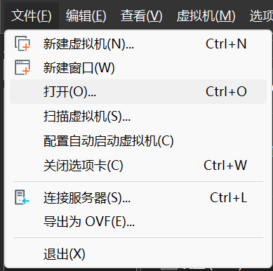
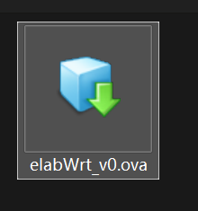
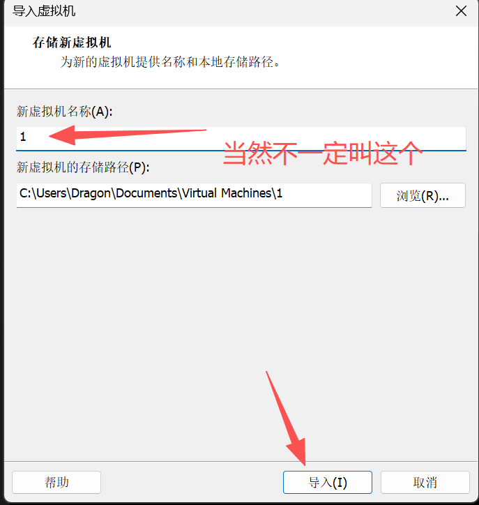
2.配置虚拟网络适配器与虚拟网卡
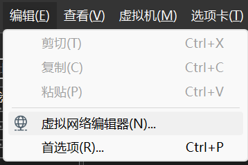
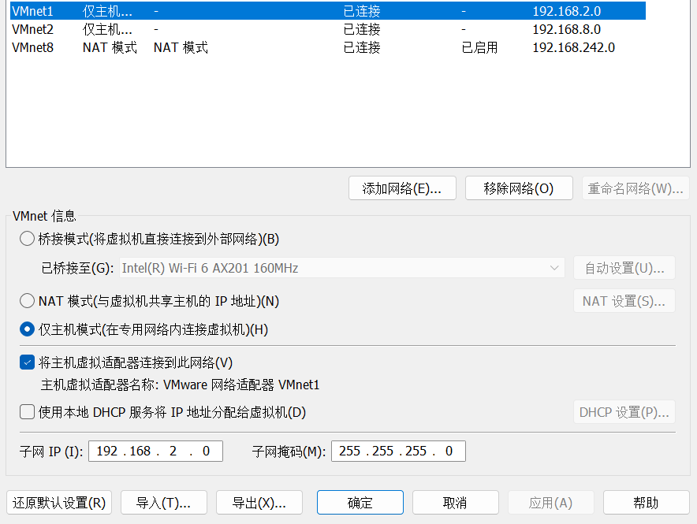
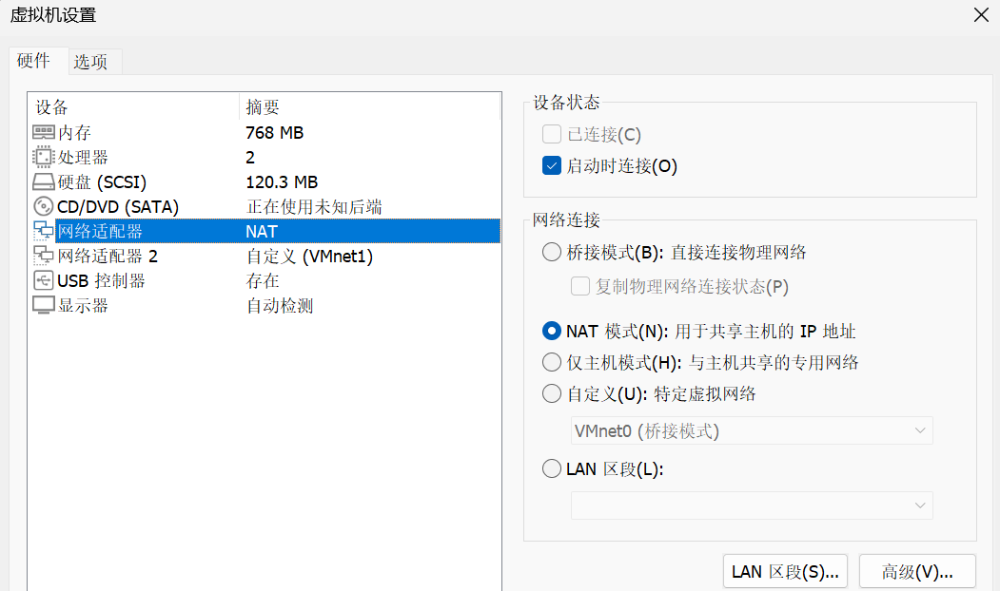
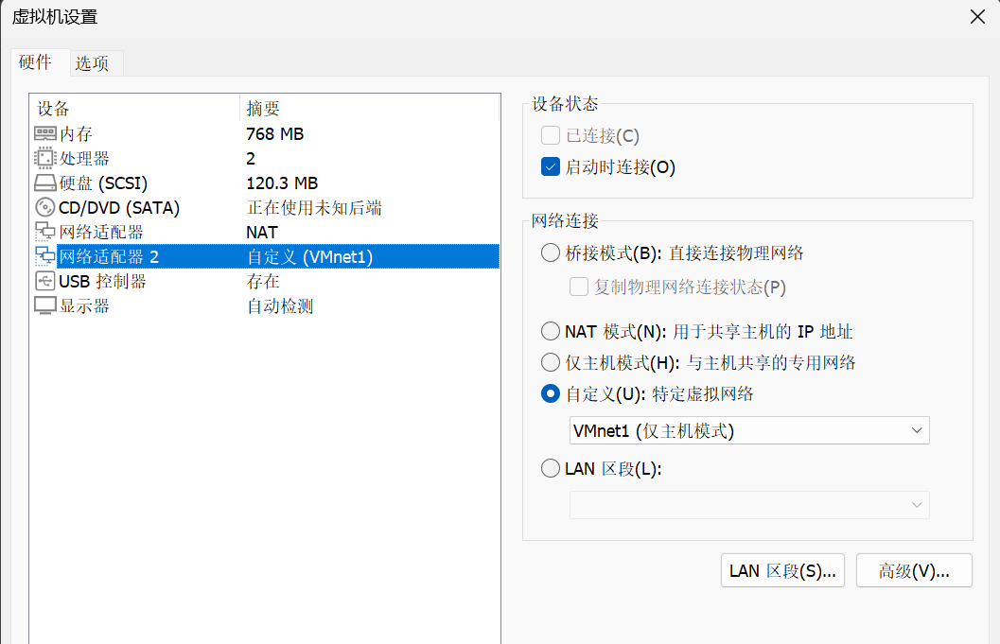
3.启动
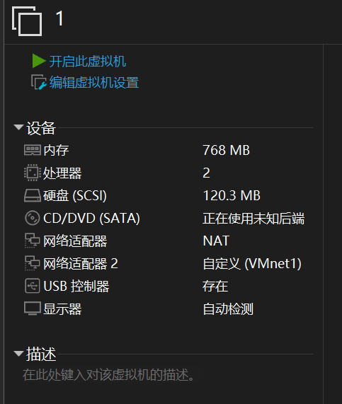
先确保网络适配器一致
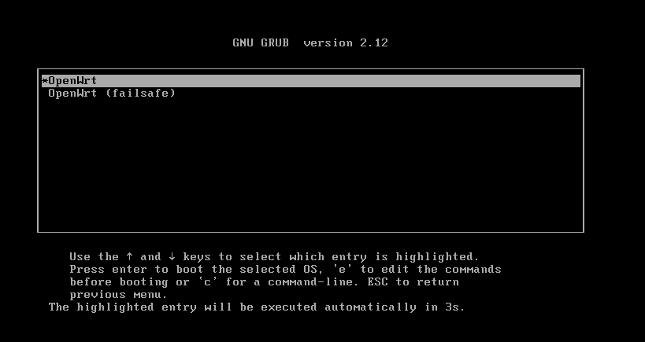
可以不动也可以enter一下
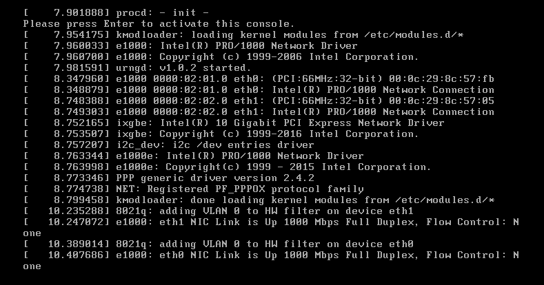
等待编译完成之后enter
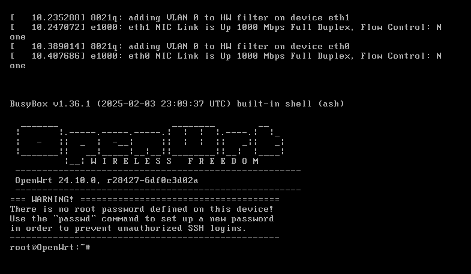
等待一会 在浏览器浏览 http:/192.168.2.2
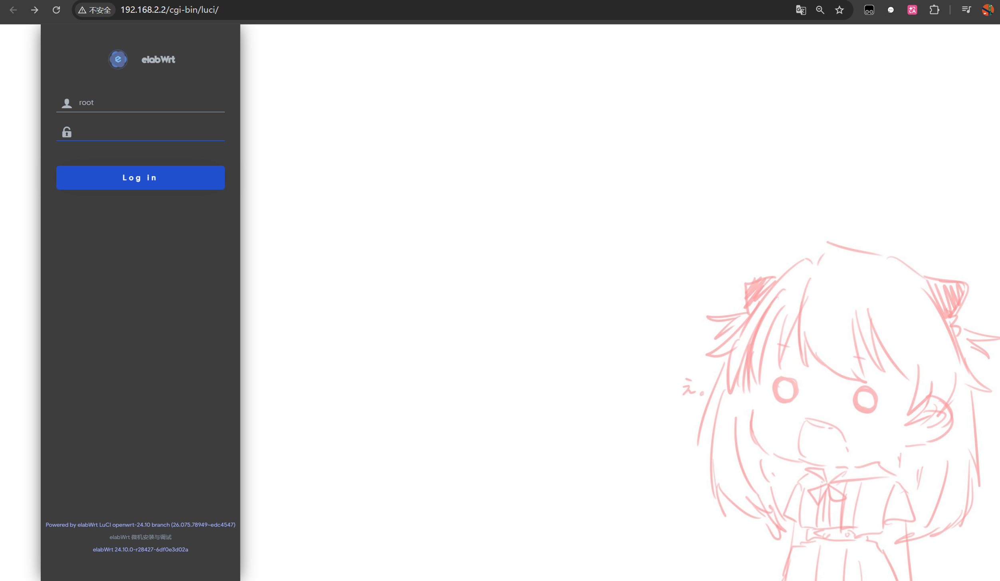
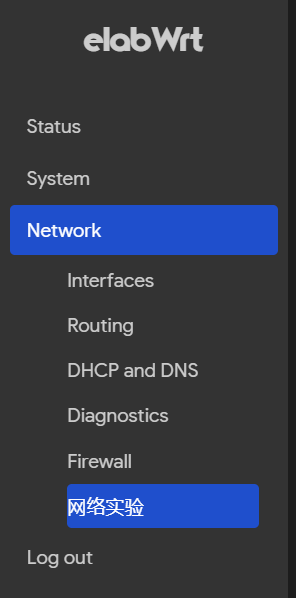
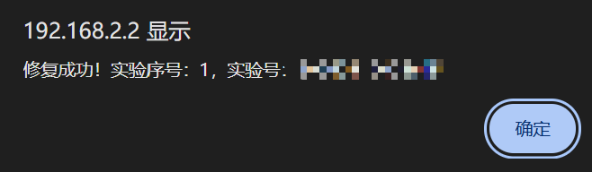